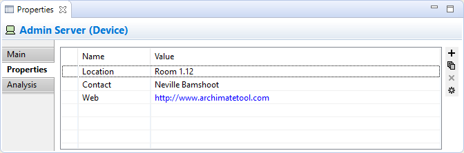
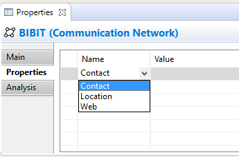
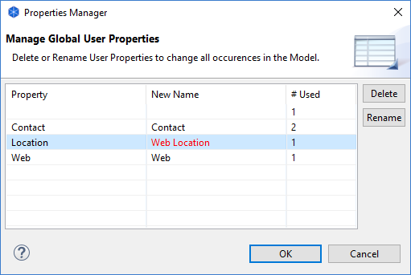

Propriétés de utilisateur
Les propriétés utiilisateur peuvent être créées depuis l'onglet "Propriétés" de la fenêtre des propriétés.
L'onglet propriétés

Propriétés utilisateur
Cet onglet vous permet d'ajouter des propriétés utilisateur de votre choix, ou des attributs à un élément, un modèle, un dossier ou une vue. Par exemple, vous pourriez souhaiter
ajouter des informations telles que "Coût", "Localisation", "Durée", "Temps", "Lien", et ainsi de suite. Les propriétés sont enregistrées sous forme de paires clef/valeur. Les propriétés qui
ont le même nom peuvent apparaître plus d'une fois dans le modèle ou l'élément et les valeurs sont saisies sous forme de texte libre. Si la valeur d'une propriété commence par "http://", "https://" ou "ftp://", elle sera affichée en bleu pour signaler qu'il s'agit d'un lien. En double-cliquant sur la partie gauche de la ligne du tableau ouvrira ce lien dans un navigateur.
Ajouter une nouvelle entrée de propriété utilisateur:
- Cliquez sur le bouton "Nouveau" de la barre d'outils à droite du tableau des propriétés ou sélectionez "Nouveau" dans le menu contextuel, ou encore double-cliquez dans une zone vide du tabeau
- Modifiez le nom de la propriété dans la cellule du tableau. S'il existe déjà une propriété utilisée quelque part ailleurs dans le modèle, vous pourrez sélectionner l'une d'elles à la place depuis la liste déroulante dans l'éditeur de la cellule.

- Modifiez la valeur de la propriété dans la cellule "Valeur"
Pour modifier le nom d'une propriété utilisateur existante en un nouveau nom ou un nom existant:
- Cliquez sur la cellule du nom de la propriété dans le tableau des propriétés et saisissez-y le nouveau nom
- S'il existe des propriétés existantes utilisées ailleurs dans le modèle, vous pouvez alternativement en sélectionner une dans la liste déroulante de l'éditeur de la cellule
Pour supprimer une entrée de propriété:
- Choisissez l'entrée de propriété que vous souhaitez supprimer
- Cliquez sur le bouton "Supprimer" de la barre d'outils à droite du tableau des propriétés ou choisissez "Supprimer" via le menu contextuel
Note: Ajouter une nouvelle propriété à un élément dans la fenêtre des propriétés signifie que celle-ci devient une propriété disponible et ré-utilisable pour tous les éléments appartenant au même modèle qui possèdent des propriétés utilisateur. Supprimer une propriété dans la fenêtre des propriétés ne la supprime que pour l'élément sélectionné. Si elle est utilisée dans d'autres éléments, elle y est toujours disponible.
Pour réarranger les entrées des propriétés par glisser-déposer;
- Choisissez l'entrée de propriété ou les entrées dans le tableau des propriétés que vous voulez réarranger
- Glissez-déposez les entrées dans le tableau des propriétés pour les réordonner
Pour trier les noms des propriétés:
- Cliquez sur le titre de colonne "Nom" du tableau
- Les noms des propriétés seront triés alphabétiqyement
Pour ajouter une entrée de propriété lien hypertexte:
- Choisissez l'entrée de propriété dans le tableau des propriétés que vous voulez utiliser en tant que lien hypertexte
- Modifiez la valeur de telle façon qu'elle contiennent une URL qui commence par "http://", "https://" ou "ftp://"
- Double-cliquez sur la partie gauche de la ligne des propriétés pour ouvrir le lien dans u navigateur
Ajouter de nouvelles propriétés d'entrées en utilisant des nos de propriété existant
- Cliquez sur le bouton de la barre d'outils "Nouveaux multiples..." à droite dy tableau des propriétés ou bien choisissez "Multiples nouveau..." dans le menu contextuel
- Select the Properties you wish to add from the dialog

- Appuyez sur OK puis modifiez les nouvelles valeurs dans le tableau des propriétés
Pour gérer et consulter globalement les propriétés utilisateur:
- Cliquez sur le bouton "Gérer" de la barre d'outils à droite du tableau des propriétés ou choisisse "Gérer" via le menu contextuel
- La boîte de dialogue "Gestionnaire des propriétés apparaît en affichant toutes les propriétés utilisateur globalement dans le modèle ainsi que le nombre de fois qu'elles ont été utilisées:

- Vous pouvez supprimer ici des propriétés: toutes les occurences de la propriété et ses valeurs sélectionnées seront supprimées de tous les éléments qui les utilisent
- Vous pouvez renommer des propriétés en modifiant le nomm dans la colonne "Nouveau nom". Toutes les occurences du nom de la propriété seront renommés pour tous les éléments qui les utilisent